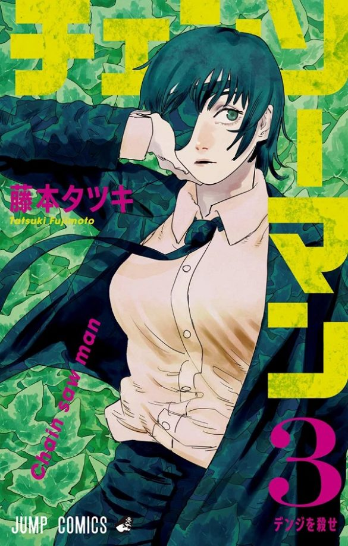
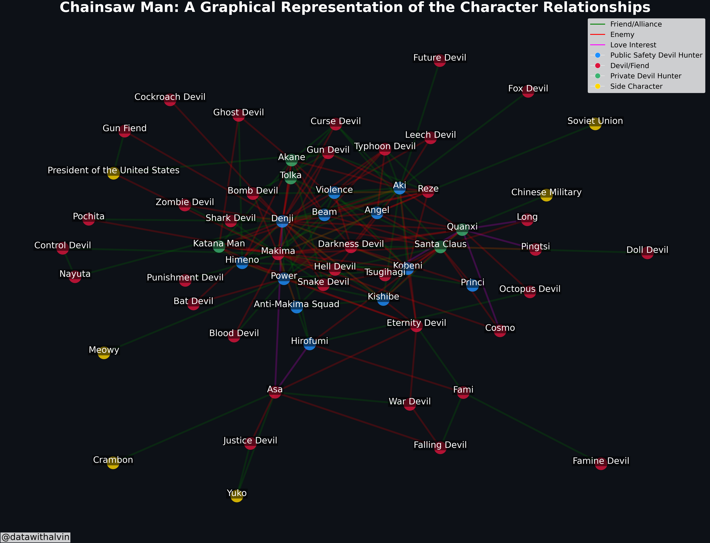
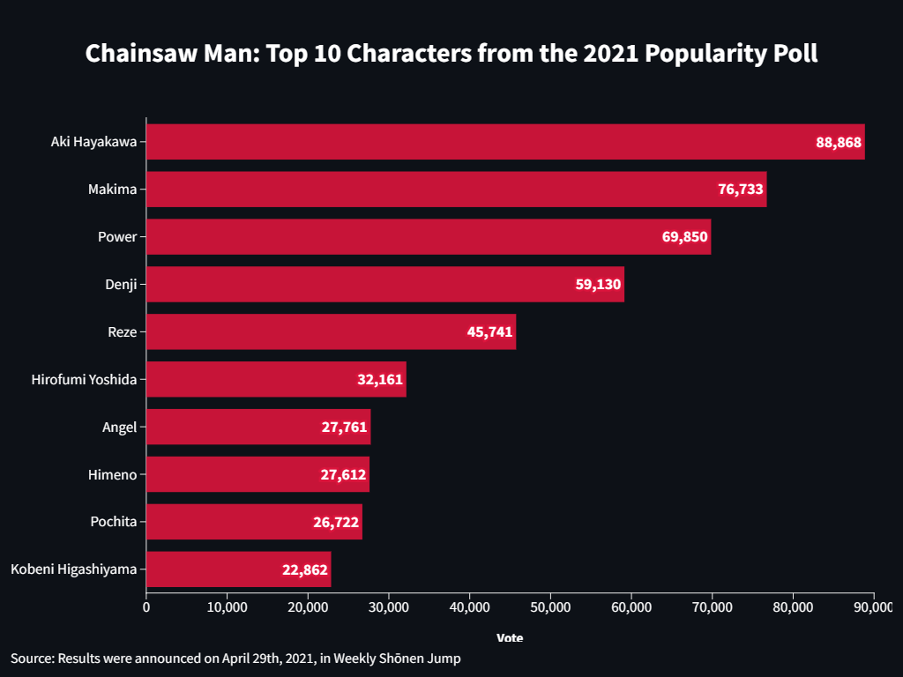
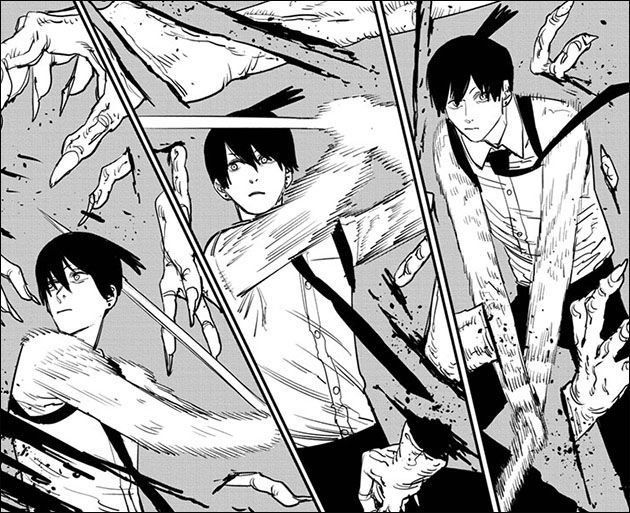

Network Graph for Chainsaw Man Series
Published: 20.03.2023
A few days ago, I got inspired to create a network graph of the characters from the insanely amazing Chainsaw Man manga. I know I’m a bit late to the party, having only started following it last year, but I’ve been hooked ever since. The unique drawing style, incredible storyline, and fascinating characters with interesting skills have kept me captivated.
As a fan of both Chainsaw Man and data visualization, I decided to combine my interests and build this network graph. Juggling work, commuting, and studying, I managed to complete this project in four days! The most challenging part was validating the dataset I built. Starting with character names scraped from the Chainsaw Man wiki, I re-read the entire manga series to input character relationships. Then, I used networkx to construct the graph.

What sets this project apart from my previous work is the multiple relationship types I’ve incorporated. I wanted to include friendships, rivalries, and love interests all in one graph, which proved to be quite a challenge. It involved experimenting with different layouts, identifying character communities through various methods, and lots of trial and error with colors to create an aesthetically pleasing yet complex graph.
I’m really happy with how it turned out! Sure, there might be a few things to refine, but for now, I think it’s pretty good. Seeing my favorite Chainsaw Man characters and their relationships visualized in this way is truly satisfying.

Oh, and I didn’t stop there! I also whipped up a bar chart showcasing the top 10 Chainsaw Man characters, as voted by readers in the 2021 popularity poll. Aki Hayakawa snagged the top spot, followed by Makima, Power, Denji, and Reze. No surprises there, given the emotional rollercoaster Aki’s story took us on!

So, that’s my Chainsaw Man network graph project in a nutshell! I hope it inspires you to dive into Tatsuki Fujimoto’s crazy world if you haven’t already. Trust me, you won’t regret it. Happy reading!